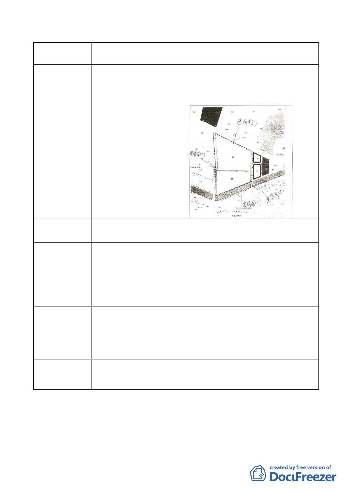

案名
變更臺北市內湖區石潭段四小段 280、281、281-1 地號等三筆
土地國中、國小用地為體育場用地及道路用地主要計畫案
建議案（三）
1.內湖區石潭段四小段 280.281.281-1.地號
2.內湖區石潭段三小段 163.164.165.166.171.172.176.177.180-1
地號
陳情地點 3
改善體育場用地週邊交通
陳情理由
建議辦法
市府回應說明
基地南側，上彎公園以北〈民權路 6 段 190 巷 63 弄與至 206
巷交叉口至 210 巷 45 號前〉增闢 10 米以上道路，以利全基地
可環狀通行，且施工中及爾後交通皆可順暢。
目前民權路 6 段 210 巷底尚未打通巷道〈石潭段三小段 172 等
多筆地號〉請參閱體育處 101 年 1 月 3 日北市體處運字第
10031837900 號公函內說明，如附件。
本建議內容體育局業已洽詢新工處，因新工處每年會函文各機
關調查是否有相關市政建設涉及開闢週邊都市計畫道路之需
求，故將由體育局於年底新工處調查需求時，提報新工處納入
開闢都市計畫道路之需求考量，俾利新工處辦理後續編列預算
及道路開闢事宜。
委員會
決議
同編號 1 陳情意見委員會決議。
- 28 -